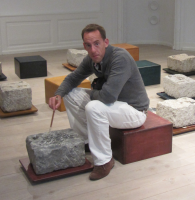
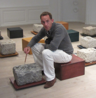
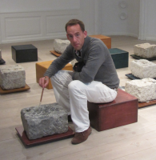
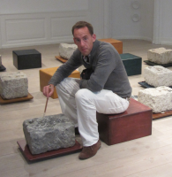

Mike Harris
 



My name is Mike, I live in London and am in my early 30's. At school my main interests were in the sciences where I did well enough to go to university. There I split my time between maths and rowing and then ventured into the world of finance. Professionally I have been there ever since in a variety of roles. In my personal life I enjoy running, have slowly discovered the benefits of yoga and enjoy reading (obviously I also enjoy playing around with computers but that's for the next section!) My crowning achievement in life so far was to achieve a Guinness world record last year.
When given this project to apply for the GA WDI I had the full story ready: played with code when younger, dabbled with VBA at work, always hankered after learning more but bar some code-academy and building my own web page never made the time to become an expert. Came to the realisation that programming is what I enjoy and what I wanted to do with my life.
Knowing that the content was sorted I set about building the structure of the webpage. And then the project took over. I wanted to add a div here, tweak the formatting there, stick in some javascript to show what I could do. At each step I found new things I hadn't done before. I had an idea of how I wanted the page to work and if at the first go I didn't succeed I tried something different. I couldn't wait for my coffee breaks, home time, evenings so I could attempt to jump the next hurdle in my way. I loved the whole process both the logic needed and the creativity in coming up with solutions.
Tackling this mini project showed me how much I enjoy the process of coding and is an answer in itself as to why I want to invest more time, money and energy in learning more and making a career and a life out of it.
A few things about GA stood out from the crowd - their global reach, the wide range of other programs they offer and their approach to getting employers in. Even more important was the great response I got from my initial online interest - a personal phone call, email and also a discussion with a newly graduated WDI student. Inspiring!
Email:
Mobile:
Personal twitter:
Tech twitter:
My Webpage: